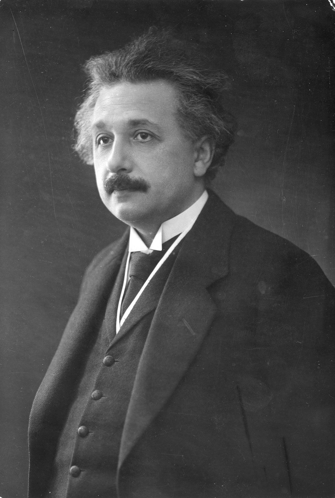

Nikola Tesla
A fost un inventor serb-american cunoscut pentru rolul său în dezvoltarea curentului alternativ și pentru inventarea motorului cu curent alternativ. El a avut numeroase realizări și brevete în domeniul energiei electrice, radiolocației și transferului de energie fără fir. Contribuția sa la lumea știintelor a fost considerabilă și încă este recunoscută astăzi.

Albert Einstein
A fost un fizician teoretician german, cunoscut pentru formularea teoriei relativității generale și contribuțiile sale la teoria cuantelor. A primit Premiul Nobel pentru Fizică în 1921 și a avut un impact major asupra fizicii moderne. El a fost, de asemenea, un activist progresist pentru pace și drepturi civile.